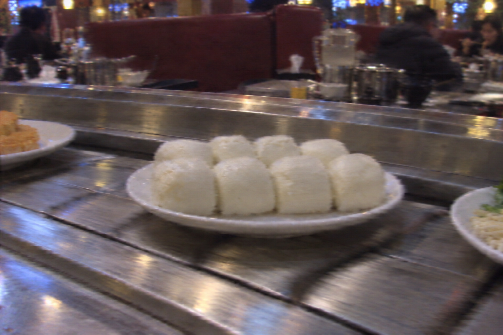
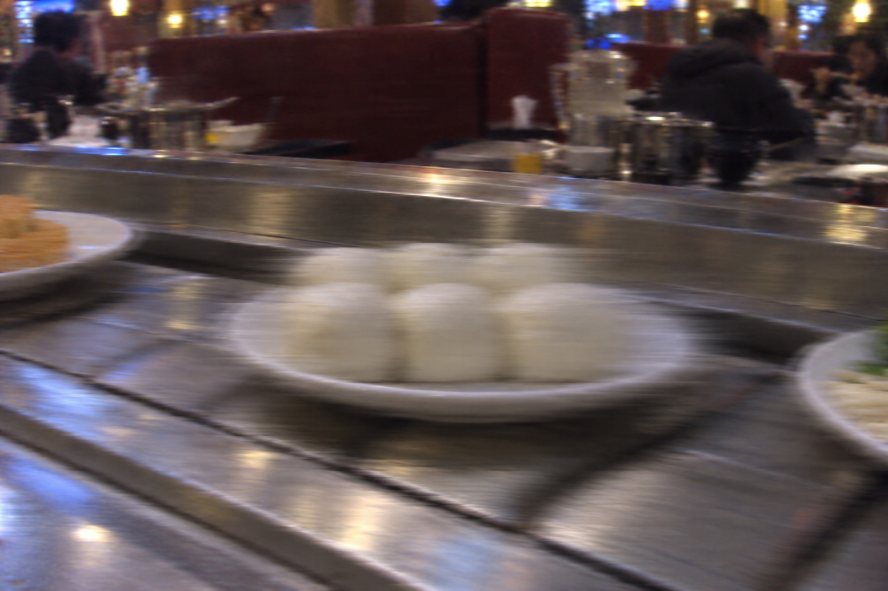
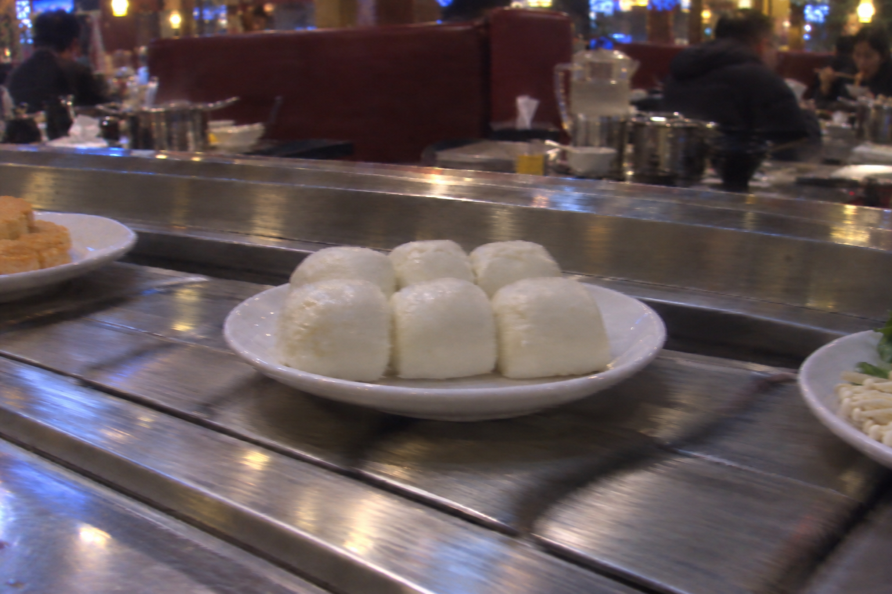
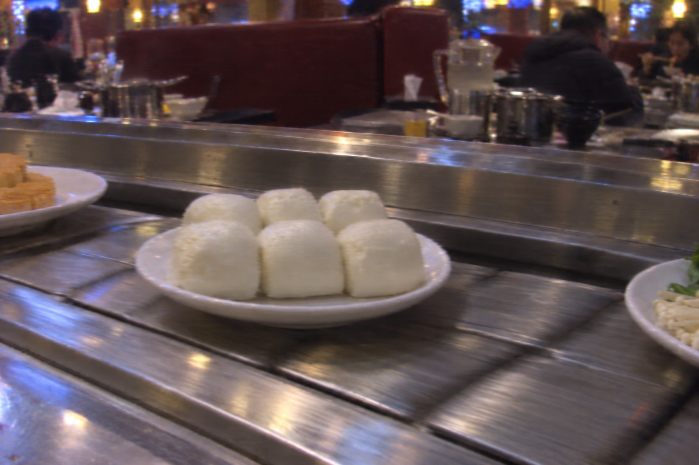
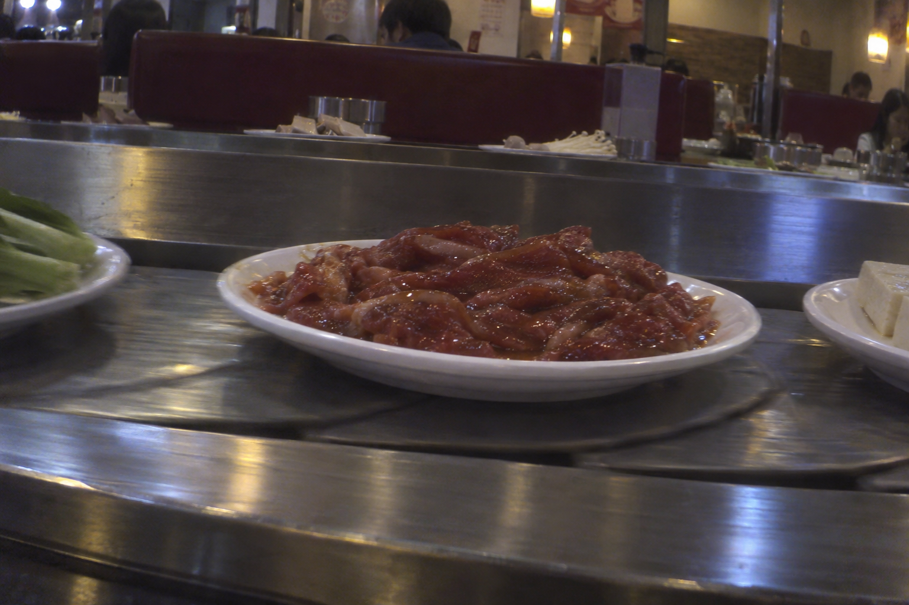
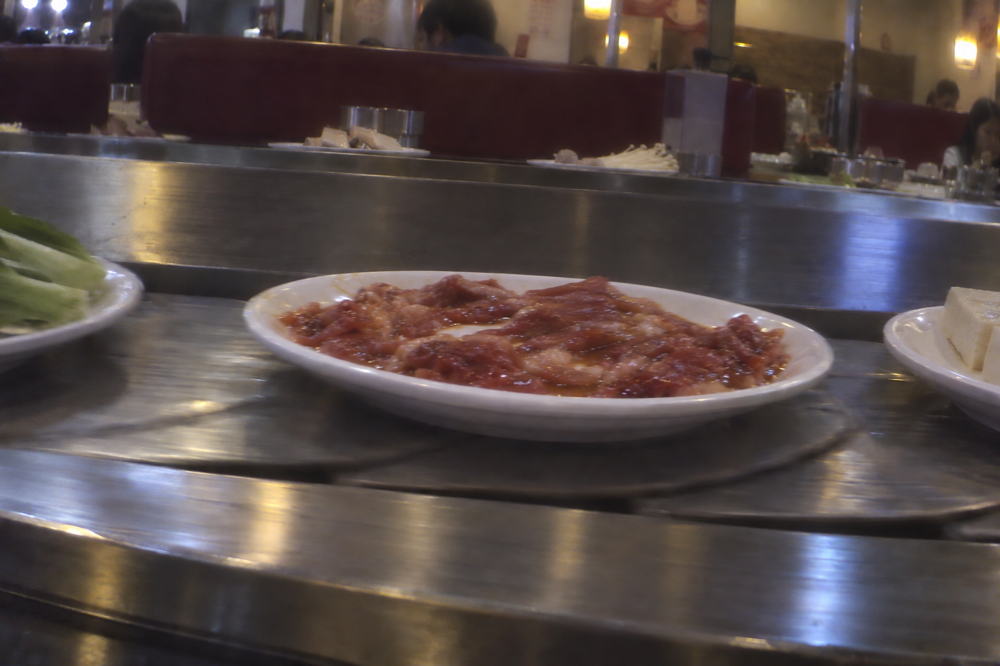
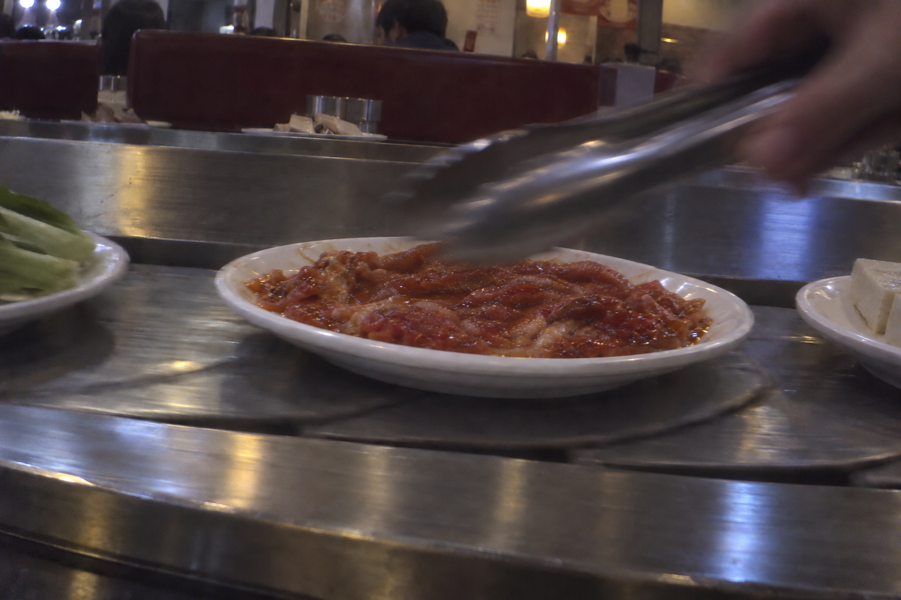

B001 · 小馒头
17:00:00 · A站 · 第1圈
观测净重 201 g
查看答案
设定净重 200 g · 8个
oblique_low_quality / normal
建立基线；场景设定8个，但侧拍遮挡，单帧不要求准确数出8个。
2种菜品 / 2条连续轨迹 / 8张AI生成图片。以下重量均为模拟传感器读数，精确克数是场景设定，未经实物测量。每条轨迹按 A → B → C → A 排列，间隔60秒。默认隐藏答案，便于先观察再判断。

17:00:00 · A站 · 第1圈
观测净重 201 g
设定净重 200 g · 8个
oblique_low_quality / normal
建立基线；场景设定8个，但侧拍遮挡，单帧不要求准确数出8个。

17:01:00 · B站 · 第1圈
观测净重 151 g
设定净重 150 g · 6个
motion_blur / normal
图像模糊，降低视觉信任；重量支持约50克减少，不能确认顾客实际食用。

17:02:00 · C站 · 第1圈
观测净重 331 g
设定净重 150 g · 6个
oblique_low_quality / positive_spike
重量突增180克，低质量侧拍无法可靠核实数量且无补菜记录；标记未解释的突增并要求复测，不能直接断言补菜或传感器故障。

17:03:00 · A站 · 第2圈
观测净重 149 g
设定净重 150 g · 6个
oblique_low_quality / normal
复测回到约150克；结合无补菜记录和没有明确大量减少的视觉证据，支持上一条读数异常，不能把本次下降182克直接记为取用。

17:00:30 · A站 · 第1圈
观测净重 300 g
设定净重 300 g
oblique_low_quality / normal
建立腌牛肉基线，斜拍、低画质与肉片重叠，不要求精确计数或从单图估克数。

17:01:30 · B站 · 第1圈
观测净重 212 g
设定净重 210 g
spread_similar_area / normal
重量减少88克；摊平后面积仍相似，不能据面积推断重量未变。

17:02:30 · C站 · 第1圈
观测净重 209 g
设定净重 210 g
hand_occlusion / normal
遮挡降低视觉可判定性；3克差在本场景噪声范围内，不判定取用，也不能只看见手就判定夹取。
17:03:30 · A站 · 第2圈
观测净重 332 g
设定净重 330 g
oblique_low_quality / normal
重量增加123克，结合已记录120克补菜，支持正常补菜；低质量图像只作辅助，不要求验证精确增加克数。